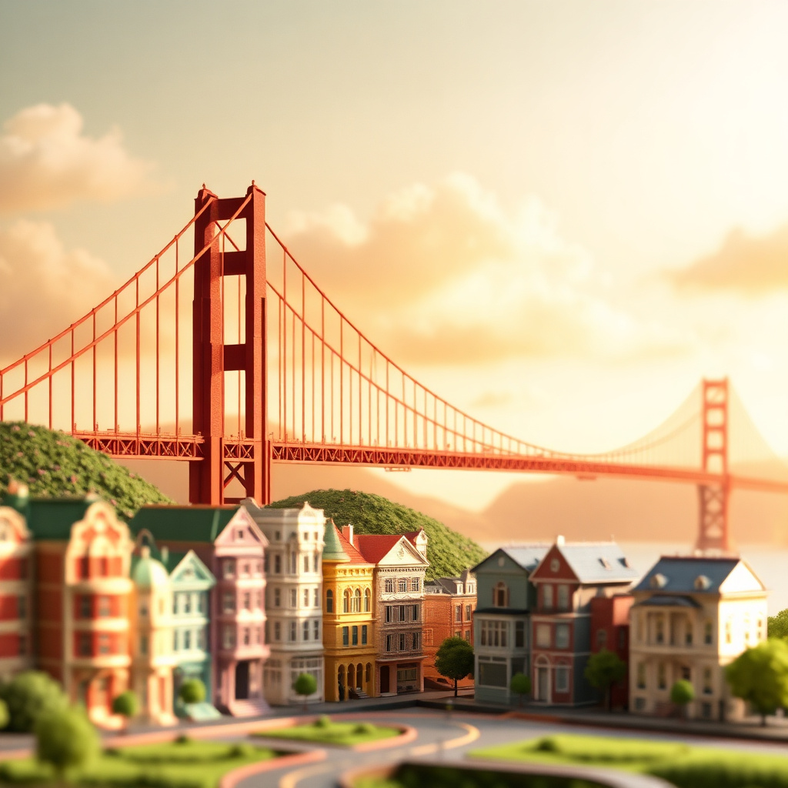
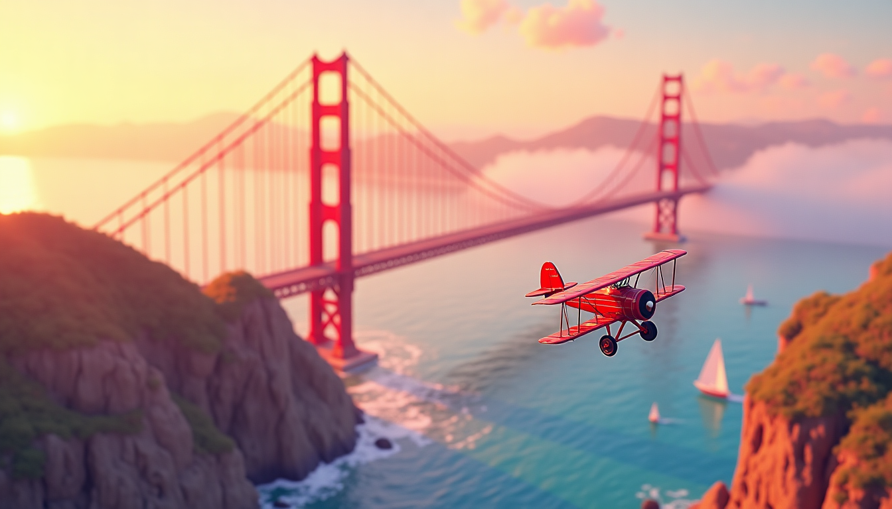
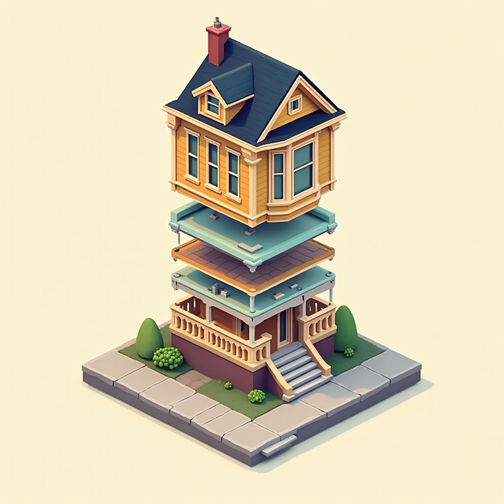
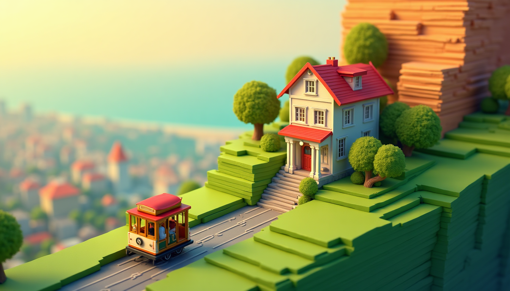
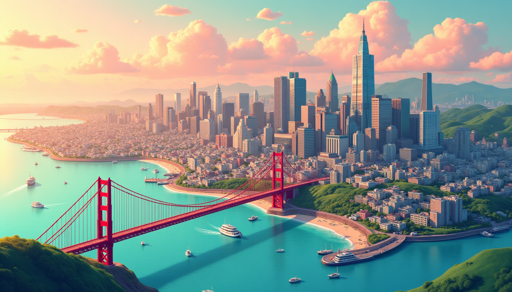
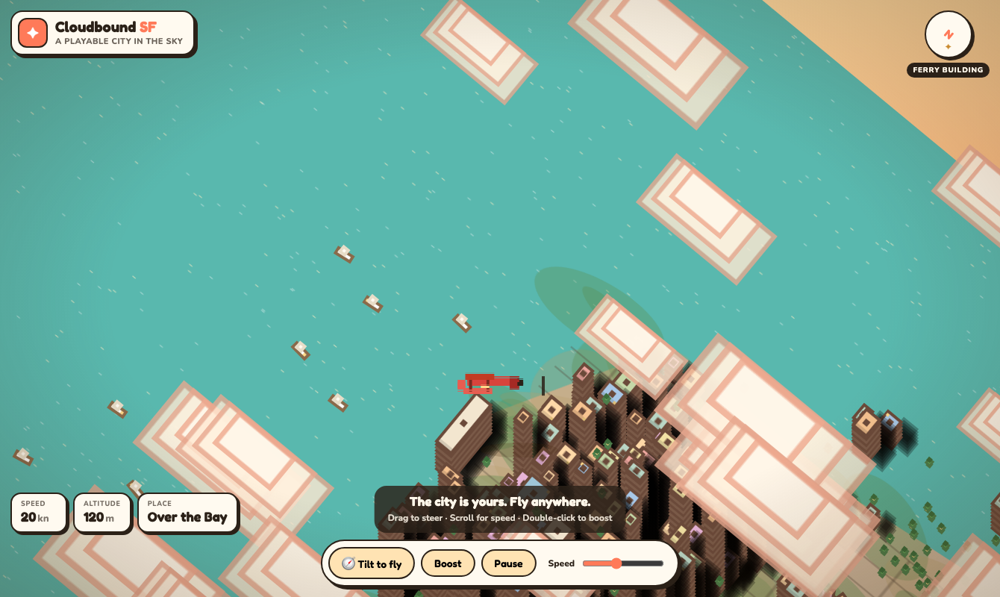
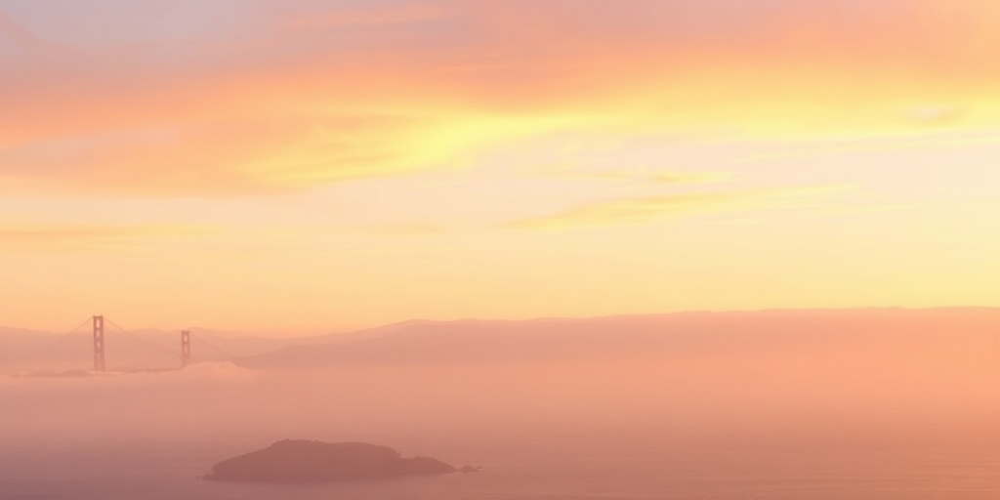
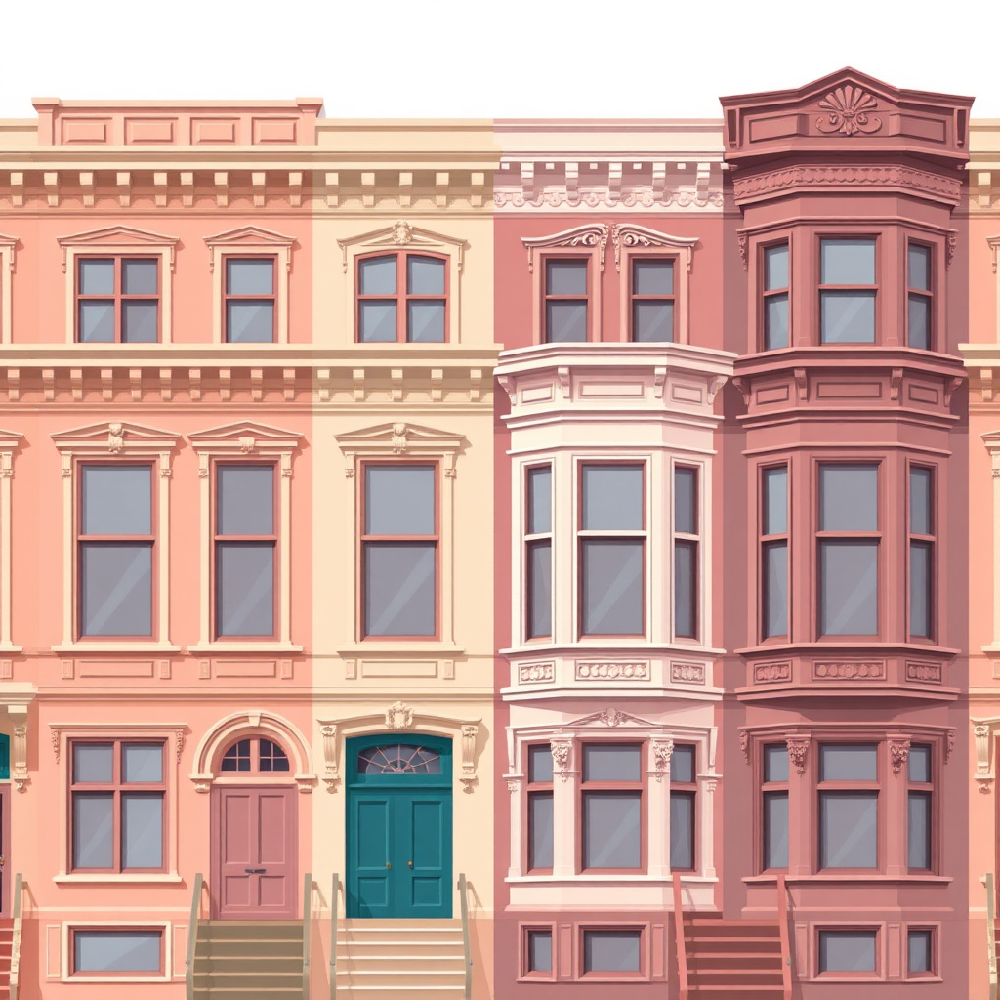
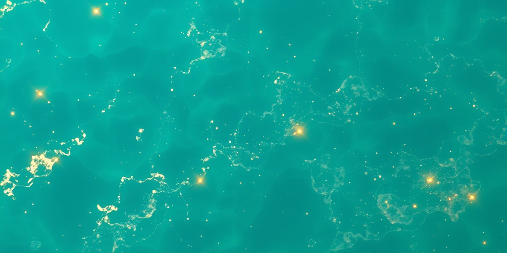
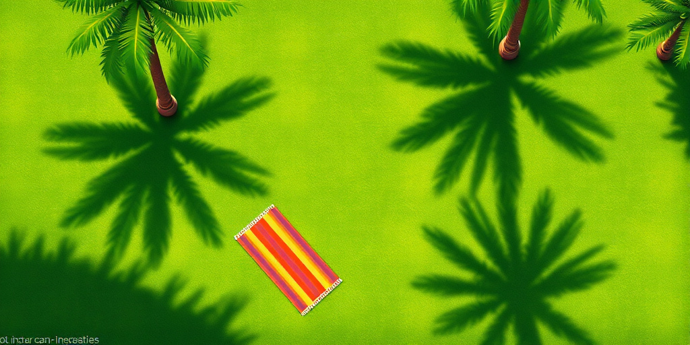

The city itself is the interface. No menus to learn, no mission to finish — you open the page and you are already floating over the bay at golden hour. Built to inspire curiosity, wonder, and the simple pleasure of moving through a beautiful world.

The itch. Most city websites are maps, lists, and hero sections. I wanted the opposite: step into San Francisco. The Golden Gate in fog, Painted Ladies in pastel, Twin Peaks above it all — as a tiny living diorama you fly through just because it feels good.
The bet. The viral sprite-stacking pixel-art clips prove flat 2D slices can feel more tactile and charming than heavy 3D. If that technique can carry a whole flyable city in a browser — instantly, on phone and desktop — it becomes a new kind of love letter to a place.
Wonder over tasksCity as interfaceGolden hour, alwaysFly anywhere

Take one pixel-art sprite. Slice it into horizontal layers. Draw every layer again, a few pixels higher. The stack fakes depth — and when each layer rotates with the camera, a flat drawing turns like a solid model.
Cloudbound SF runs a custom Canvas 2D stack engine: every building, bridge tower, tree, boat, and cloud is a stack of pixel slices — up to 30 layers for the Golden Gate towers — painter-sorted and rotated live as you steer. No 3D meshes.




| Place | In the build |
|---|---|
| Golden Gate Bridge | Two 30-slice red tower stacks + deck over the fog channel |
| Downtown | Salesforce-scale tower stack + Transamerica pyramid stack, 230-building city fill |
| Painted Ladies | Six pastel stacks whose roof slices slowly turn — the viral rotation, live |
| Twin Peaks · Dolores Park | Twin hill massifs, palm stacks, picnic-blanket pixels |
| Ferry Building · Chinatown · Ocean Beach | Waterfront stacks + boat stacks, blinking lantern stacks, surf edge |
Flight: drag to steer · scroll for speed · double-click / Boost to surge · WASD + Space / Shift · Esc pause with sensitivity & time-of-day · phone tilt with calibration, dead-zone and smoothing, plus touch fallback. Compass, speed, altitude, and landmark toasts ride along in a brass-and-cream HUD.
All painted art comes from the Runware API (runware:100@1, imageInference). The key lives only in a local .env used by a build-side script — it is never shipped to the browser and never committed. A subagent generated the water, park, and poster textures in parallel while the engine was being built.




cloudbound-sf.pages.dev — open it and fly.
Stack. Zero-build static site: Canvas 2D stack engine, procedural pixel sprites, pre-rendered rotating ground, adaptive slice-step that holds frame rate, Web Audio wind on first touch.
Verified so far. Headless Chromium capture of the opening flight (previous slide), clean syntax checks, live 200 from the Pages deployment. Full playtest rounds — every control, phone size, landmark pass — are the next update.
Drag · steerScroll · speedDouble-click · boostTilt · mobile flight
1 · Tune the opening framing so the bridge and skyline greet you, exactly like the reference. 2 · Chunkier island terrain and stronger bay contrast to match the stack aesthetic. 3 · A bigger stacked aircraft with animated thruster slices. 4 · Landing perches, a cable car on its wire, and collectible fog wisps for explorers. 5 · Full critic playtest rounds, then a custom domain.
The city is yours. Fly anywhere.